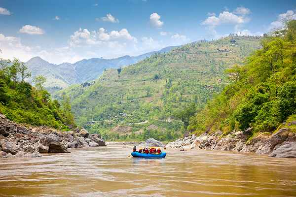

Akosombo Whitewater Rafting was founded with the vision of transforming the natural beauty of the Volta River into a world-class destination for adventure tourism in Ghana. What began as a passion for outdoor exploration has evolved into a mission-driven enterprise, combining exhilarating rafting experiences with a commitment to community development and public health. Established in 2025, the company set out to promote eco-tourism while also addressing critical local issues. Inspired by the resilience of the communities surrounding the Akosombo area, our founders envisioned a business that would not only create unforgettable memories for adventurers but also drive meaningful social impact.

Since its inception, Akosombo Whitewater Rafting has grown into a symbol of sustainable tourism. We have welcomed thousands of local and international guests, collaborated with regional partners, and launched initiatives aimed at eradicating malaria in the Eastern Region by 2027. Our dedication to safety, environmental stewardship, and social responsibility continues to shape every aspect of our operations. As we look to the future, we remain committed to preserving the natural environment, enriching lives through adventure, and using our platform to create a healthier, more vibrant Ghana..